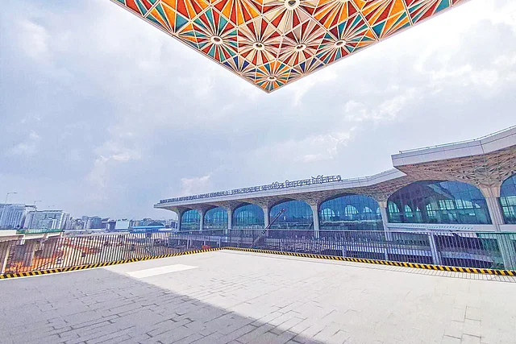

শাহজালাল বিমানবন্দরের তৃতীয় টার্মিনালে প্রবাসীকল্যাণ ডেস্ক বন্ধের চেষ্টা
নতুন টার্মিনাল চালু হতে পারে অক্টোবরে। এখানে জায়গা বরাদ্দ পাচ্ছে না প্রবাসীকল্যাণ ডেস্ক। এটি হলে ভোগান্তি বাড়বে প্রবাসীদের।
বিদেশে যাওয়া ও আসার সময় প্রবাসীদের সেবা দিতে দেশের তিনটি আন্তর্জাতিক বিমানবন্দরেই আছে প্রবাসীকল্যাণ ডেস্ক। নতুন কর্মীদের ছাড়পত্র যাচাই, অসুস্থ কর্মীদের বরণ, প্রবাসীদের মরদেহ গ্রহণ করে থাকে এই ডেস্ক। এটি এখন বন্ধের পাঁয়তারা শুরু হয়েছে। ঢাকার হজরত শাহজালাল আন্তর্জাতিক বিমানবন্দরের তৃতীয় টার্মিনালে জায়গা বরাদ্দ পাচ্ছে না প্রবাসীকল্যাণ ডেস্ক। Read more..
হজরত শাহজালাল আন্তর্জাতিক বিমানবন্দরের তৃতীয় টার্মিনালে প্রবাসীকল্যাণ ডেস্কের অবস্থান নিশ্চিত করার জন্য জরুরি ভিত্তিতে ব্যবস্থা নিতে অনুরোধ করে ২৪ জুন চিঠি দিয়েছে প্রবাসীকল্যাণ ডেস্ক। বাংলাদেশ জনশক্তি, প্রশিক্ষণ ও কর্মসংস্থান ব্যুরোর (বিএমইটি) মহাপরিচালকের কাছে পাঠানো ওই চিঠির অনুলিপি প্রবাসীকল্যাণ ও বৈদেশিক কর্মসংস্থান মন্ত্রণালয় এবং ওয়েজ আর্নার্স কল্যাণ বোর্ডের কাছেও পাঠানো হয়েছে।